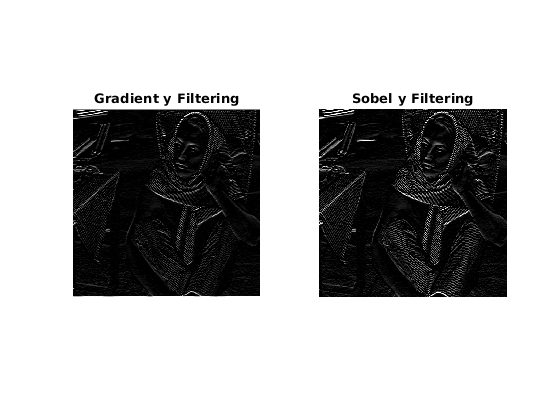

Contents
Filtering images using convolutions - Florian Bertelli - Ramine Hamidi
The filters used in images correspond to finite impulse response where :
if we use 3x3 filters
We can also re-write this convolution as a sum in 2 dimensions (rows and columns) and each pixel of the output image is obtained with the filters convolved with the pixel of the input image and its neighbours.
The filter has the form:
im = imread('barbara.jpg'); imshow(im) title('Original Image') figure();
Gradient Filtering
The filters for edge detection of size 3x3 are this one, we convolve them with the image.
is applied to detect edges horizontally and  detects vertical edges. The filters provide differentiating in each direction.
detects vertical edges. The filters provide differentiating in each direction.
There are high-pass filters as they are designed to detect high variations in the images (that are high frequencies in the Fourier domain), without keeping information about uniform regions (that are low frequencies for which the output will be close/equal to 0)
Here is what we get when applying our filters :
gradienty = fspecial('prewitt'); gradientx= transpose(gradienty); imgradienty = imfilter(im , gradienty); imgradientx = imfilter(im , gradientx); subplot(121); imshow(imgradienty); title('Gradient y Filtering'); subplot(122); imshow(imgradientx); title('Gradient x Filtering');
Sobel Filtering
The filters for edge detection wtih Sobel filters of size 3x3 are this one, we convolve them with the image.
The sobel filtering is similar to a basic gradient filtering but has the advantage of providing smoothing (reducing noise )in the output image by placing emphasis on the pixels that are closer to the center.
sobely = fspecial('sobel'); sobelx= transpose(sobely); imsobelx = imfilter(im , sobelx); imsobely = imfilter(im , sobely); subplot(122); imshow( imsobely); title('Sobel y Filtering');
Average Filtering
This part will be about average filtering
The filter for an average filter of size 3x3 is this one, we convolve it with the image.
figure(); average = fspecial('average'); imaverage = imfilter(im, average); imshow(imaverage); title('Average Filtering');
What we get here is an image in which high frequencies have been removed because an averaging filter is a low-pass filter. Indeed, by doing an average of the neighbour pixels, the contrasts which are the high frequencies in the Fourier domain are lowered. The result is an image with less noise but also a loss of information on high frequencies. The image is smoother but also appears to be blur because averaging uniformize it.
Gaussian Filtering
The filter for a Gaussian filter of size 3x3 is this one, we convolve it with the image.
It is similar with the averaging filter but the difference is that the convolution kernel has weights corresponding to a 2-D Gaussian, so the weight of the center pixel will be higher and the nearest neighbours will have more weight than the furthest ones.
figure(); gaussian = fspecial('gaussian'); imgaussian = imfilter(im , gaussian); imshow(imgaussian); title('Gaussian Filtering')
It is also a low-pass filter, but it is more subtle than the averaging filter. Due to the fact that the center pixel has more weight, the loss of information on higher frequencies is lower but we can still remove some noise efficiently. Therefore the image is not as blur as the one we got using an averaging filter.
Filtering in frequency domain
We can also perform filtering in the Fourier domain by a product of the Fourier transform of the filter and the Fourier transform of the image because if we have :
we also have :
and then we just have to perform the inverse Fourier transform.
Here is how Fourier transforms of the filters we used look like :
im =imread('fourier.jpg');
imshow (im);
We clearly see that the edge detection filters are high-pass filters as they keep high frequencies situated on the edges in the Fourier domain, and that filters used for noise reduction are low-pass filters.